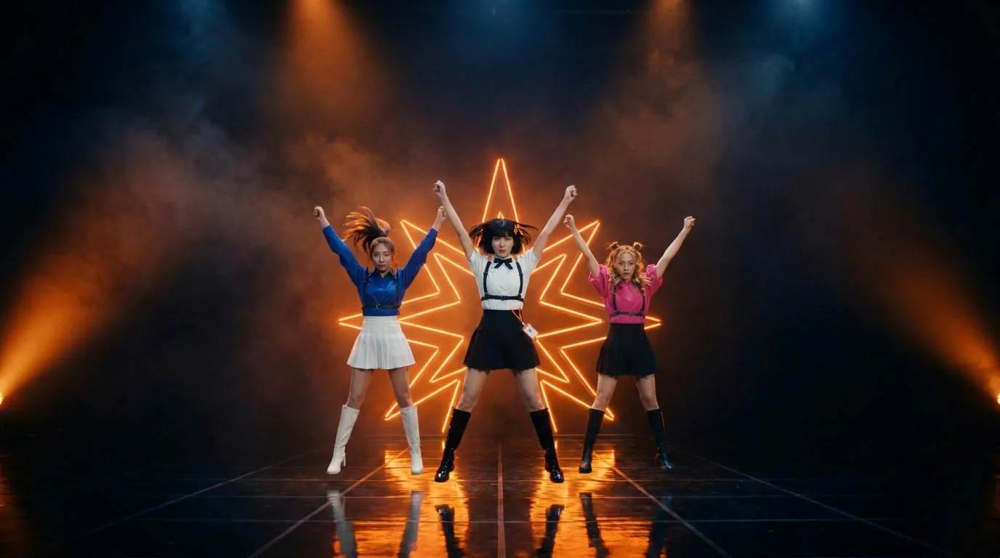

Real cast × paper motion · music video
Claude Pop
一首越唱越快的歌，從 104 BPM 一路加速到 330 BPM，然後在奇點那一刻整首切斷。歌曲是原創的，在瀏覽器裡即時合成；演員和場景是 Leonardo 生成的真人劇照，鏡頭推移、跟拍子切動作、對嘴、複製人海、歌詞排版和網路迷因，全部由程式在 canvas 上即時做出來。
Cast
演員表
三位都是原創角色，不是真人。主角代表 Claude：齊瀏海鮑伯頭、橘色八角星髮夾、泡泡袖白襯衫、黑色背帶與及膝長靴，腰間掛著識別證；兩位伴舞照 K-pop 團體的代表色分成藍與粉。照片用 Leonardo（Nano Banana Pro）生成，片中每一個鏡頭都帶著主角這張定裝照當長相參考，所以是同一個人。
- 主角LEAD · CLAUDE
- 伴舞・藍DANCER · BLUE
- 伴舞・粉DANCER · PINK

副歌舞台STAGE · 4 POSES × BEAT
- 紙#EFE9DD
- 墨#141210
- 星橘#F26A36
- Riso 藍#3550C8
- 螢光粉#FF6FA3
- 向日葵黃#FFD23F
From the brief
原始需求怎麼變成這一頁
原本的 prompt 是寫給代理人的完整製作流程：用圖片模型做角色表與場景，再用 Seedance 生成影片當底片，最後用 JavaScript 做動態與排版。這一頁保留「真人、場景交給生成模型，動態交給程式」的分工，但只生成靜態劇照，不生成影片。
- 真人與場景
- 用 Leonardo 生成 28 張真人劇照，其中 9 張另外去背；每一個鏡頭都帶著主角的定裝照當長相參考。動態全部交給程式，所以頁面很輕（約 1.8 MB），也能精準對拍。
- 同一首歌
- 參考影片的歌有版權，這裡改用原創詞曲：鼓、貝斯、和弦、琶音與用母音共振峰合成的「人聲」，全部在瀏覽器裡即時合成，不載入任何音檔。
- 動態由 JS 做
- 鏡頭推移、每一拍切一個舞蹈動作、走廊裡左右腳交替、撕紙轉場、漏光、黑邊；再疊上紙紋、網點與錯版印刷的字。
- 代表 Claude 的主角
- 向日葵般的八角星變成髮夾、舞台的霓虹，還有她瞳孔裡的倒影；兩位伴舞照 K-pop 團體的代表色分成藍與粉。
- 速度越來越快
- 每一段都比上一段快：104 → 112 → 120 → 128 → 136 → 148 BPM，奇點段從 150 加速到 330；右上角的 BPM 與 tokens/s 跟著往上跳。再副歌時去背的三人組每拍複製一倍，指數成長。
- 時事與迷因
- line goes up、數學被吃掉的 Navier–Stokes、feel the AGI、it's so over / we're so back、新世紀福音戰士的「get in the robot」與「逃げちゃダメだ」。
- 網路粗獷風插入
- 「時間軸」段落改成 Web 1.0 網頁、貼紙、投票卡與片名卡，硬切，不轉場。
- 歌詞上畫面、大小有變化
- 開場是滿版巨字，主歌像字幕，副歌的 FASTER 夾在舞者和背景之間（去背疊回原位）、「vertical」直著排，時間軸段落變成貼紙與網頁標題。
- 對嘴與對拍
- 唱歌特寫有閉嘴與張嘴兩張照片，張嘴那張跟著合成人聲的音量淡入淡出；畫面、歌詞、嘴型、聲音共用同一張拍點表，所以永遠對得上。